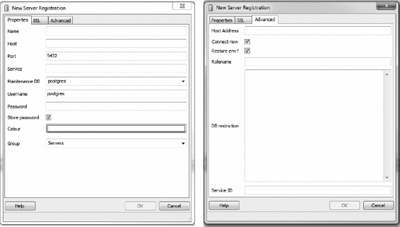
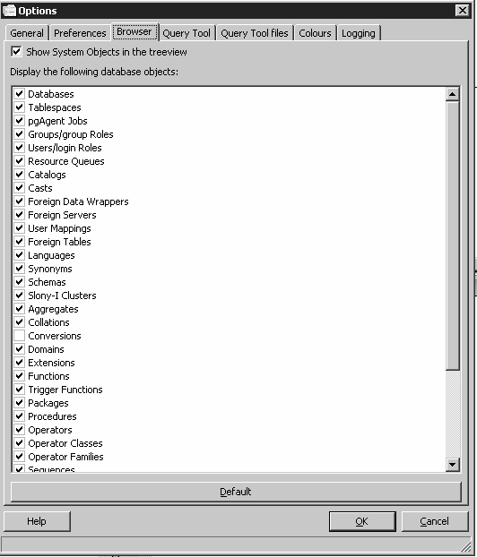

pgAdmin 左侧的目录树并不总是和数据库服务端实时保持一致的。例如，如果有人通过一个会话连接到服务端并修改了某表的结构，此时另一个人通过另一个会话打开的 pgAdmin 目录视图上的表结构并不会实时更新。在最新的版本中有一个设置，可用于强制自动刷新，但请理解无论如何都会有一定的时延。
pgAdmin 左侧的目录树并不总是和数据库服务端实时保持一致的。例如，如果有人通过一个会话连接到服务端并修改了某表的结构，此时另一个人通过另一个会话打开的 pgAdmin 目录视图上的表结构并不会实时更新。在最新的版本中有一个设置，可用于强制自动刷新，但请理解无论如何都会有一定的时延。
你可以从 pgAdmin 的官网 www.pgadmin.org下载 pgAdmin 的安装包，网站上还提供了 pgAdmin 的使用手册，你可以仔细研读一下。该工具的功能设计清晰有序，而且大部分功能是自解释的，也就是说你仅凭摸索而无需专门指导即可了解其使用方法。对于那些爱“尝鲜”的人们来说，可以尝试使用测试版，PostgreSQL 社区将很感谢你对测试版进行试用并反馈 bug。
下面会先列出我们认为最精华的部分功能，不过这只是小试牛刀，更多内容请参见 pgAdmin 官网上的功能介绍页面（http://pgadmin.org/features.php）。
执行计划的图形化解释功能
该功能能够以图形化方式展示规划器的内部工作过程，有了该功能以后就不再需要在冗长难懂的执行计划文本中艰难跋涉寻求真相了。
SQL执行面板
不管在界面上执行什么样的操作，pgAdmin 最终也是要通过 SQL 语句来与 PostgreSQL 服务端进行交互，系统允许你查看这种底层 SQL。当你使用图形化界面对数据库服务器进行操作时，pgAdmin 会自动在 SQL 窗格中展示这些自动生成的 SQL 语句。对于新手来说，研究这种自动生成的 SQL 是极好的学习途径。对专家来说，好好利用这种自动生成的 SQL 可以节省大量时间。
postgresql.conf和pg_hba.conf等配置文件的图形化编辑器
你不再需要四处寻找配置文件的位置并使用文本编辑器来修改它们，在 pgAdmin 上可以一站式搞定。
数据导入和导出
pgAdmin 能够轻易地将语句查询结果导出为 CSV 文件或者基于其他分隔符的文本文件，当然也可以将这类文件导入到数据库中。它甚至支持将表数据导出为 HTML 格式，因此可以当作一个简易的一键式报表服务器来用。
备份与恢复向导
如果你记不住 pg_restore 和 pg_dump 命令的大量选项，那没关系，pgAdmin 提供了一个很友好的图形化界面来帮你设定这些选项，通过调整这些选项可以实现对 database、schema、单张表以及全局对象进行定制化的备份或者恢复。你可以在备份恢复界面的“消息”选项卡上看到系统自动生成的 pg_dump 或 pg_restore 命令行语句，如果你觉得有必要，完全可以把这些语句复制下来作为例句使用。
授权向导
该功能可以帮助你一次性对很多数据库对象进行授权或者解除授权操作，从而大大节省你的时间。
pgScript脚本执行引擎
pgScript 是一种速度很快但不太“正规”的脚本执行机制，该机制不要求整个脚本中执行的所有操作构成一个事务。在 pgScript 中，你可以在一个循环语句的每一次循环中都执行一次提交操作，如果是在函数中，那么只能是所有循环都结束了最后才能执行提交。很遗憾的是，这种灵活的机制只能在 pgAdmin 中使用。
插件架构
该架构让用户只需点一下鼠标即可加载一个新的 pgAdmin 插件。你甚至可以通过此机制来加入你自己开发的插件。我们在“pgAdmin III 1.1.3 版中插件机制的变化”这篇博文（http://www.postgresonline.com/journal/archives/180-pgAdmin113plugins_postgis.html）中讨论了该特性。
pgAgent定时任务工具
pgAgent 是一种跨平台的定时任务计划工具，我们后续将使用一整节的篇幅来介绍它。pgAdmin 提供了一套很完善的用于访问 pgAgent 的接口。
通过 pgAdmin 连接到 PostgreSQL 服务器是很简单的，其属性页和高级功能页面如图 4-1 所示。

图 4-1：pgAdmin 注册服务器连接对话框
pgAdmin 界面左侧的树状目录布局看起来很直观，其中展示了所有的数据库对象。你可以进入 Options（选项）选项卡中，勾选掉你不希望看到的数据库对象类型，这样左侧的目录树就会精简很多。可以通过菜单栏上的 Tools（工具）→ Options（选项）→ Browser（浏览器）来打开目录树定制面板，你将看到如图 4-2 的界面。

图 4-2：在 pgAdmin 的树状浏览目录中隐藏或者显示特定类型的数据库对象
如果在界面上勾选了“在树状目录中显示系统对象”，那么你将看到 PostgreSQL 服务器的内部对象，包括内部函数、系统表、表的隐藏列等。你还将看到 PostgreSQL 系统 schema 中存储的元数据，包括 information_schema 和 pg_catalog 这两个 catalog 中的内容。其中 information_schema 是 ANSI SQL 标准中规定必须要有的，因此在别的数据库（比如 MySQL 和 SQL Server）中也会存在。你可能会认出一些在使用其他数据库产品时曾经见过的表和列。